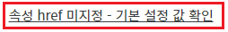
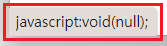
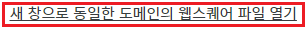
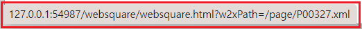
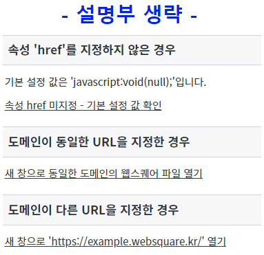
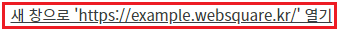
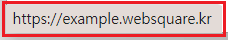
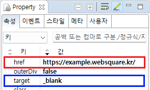

Anchor의 속성 'href' 설정 값 비교 예제입니다.
속성 'href'에 값을 설정할 때, '#'(해시) 키워드를 사용하여 특정 요소로 스크롤을 이동하는 기능은 WebSquare SP4 버전 이후부터 구조적인 제약이 있습니다. 프로젝트 환경에 따라 사용할 수 없는 경우가 있으므로 당사의 기술지원을 활용하는 것을 권장합니다.
속성 'href'를 지정하지 않은 경우
도메인이 동일한 URL을 지정한 경우
도메인이 다른 URL을 지정한 경우
STEP 1. 실행된 결과를 확인합니다.
화면의 영역 '속성 'href'를 지정하지 않은 경우'에 구성된 컴포넌트를 확인합니다.그림 1.브라우저(Chrome) 실행 예시

STEP 2. 해당 요소에 마우스를 오버하여 속성 'href'에 설정된 값을 확인합니다.
해당 요소에 마우스를 오버하면 브라우저의 좌측 하단에 'href' 속성에 설정된 값을 확인할 수 있습니다. (실행한 브라우저에 따라 출력 영역이 다를 수 있습니다.) 설정된 값은 'javascript:void(null);'입니다.
그림 2.브라우저(Chrome) 실행 예시

STEP 3. 해당 요소를 마우스로 클릭하거나 터치 스크린의 경우에는 터치합니다.
아무 동작을 하지 않습니다.
STEP 1. 실행된 결과를 확인합니다.
화면의 영역 '도메인이 동일한 URL을 지정한 경우'에 구성된 컴포넌트를 확인합니다.그림 3.브라우저(Chrome) 실행 예시

STEP 2. 해당 요소에 마우스를 오버하여 속성 'href'에 설정된 값을 확인합니다.
해당 요소에 마우스를 오버하면 브라우저의 좌측 하단에 'href' 속성에 설정된 값을 확인할 수 있습니다. (실행한 브라우저에 따라 출력 영역이 다를 수 있습니다.) 설정된 값: '/websquare/websquare.html?w2xPath=/page/P00327.xml' 실행될 URL: ['도메인 주소' 또는 'IP:port']+'/websquare/websquare.html?w2xPath=/page/P00327.xml'
아래의 이미지는 'IP:port'가 'http://127.0.0.1:54987'인 경우의 예시입니다.
그림 4.브라우저(Chrome) 실행 예시

STEP 3. 해당 요소를 마우스로 클릭하거나 터치 스크린의 경우에는 터치합니다.
브라우저의 새 창 또는 새 탭으로 웹스퀘어 화면 파일이 실행됩니다.
그림 5.브라우저(Chrome) 실행 예시

STEP 1. 실행된 결과를 확인합니다.
화면의 영역 '도메인이 다른 URL을 지정한 경우'에 구성된 컴포넌트를 확인합니다.그림 6.브라우저(Chrome) 실행 예시

STEP 2. 해당 요소에 마우스를 오버하여 속성 'href'에 설정된 값을 확인합니다.
해당 요소에 마우스를 오버하면 브라우저의 좌측 하단에 'href' 속성에 설정된 값을 확인할 수 있습니다. (실행한 브라우저에 따라 출력 영역이 다를 수 있습니다.) 설정된 값: 'https://example.websquare.kr/' 실행될 URL: 'https://example.websquare.kr/'
그림 7.브라우저(Chrome) 실행 예시

STEP 3. 해당 요소를 마우스로 클릭하거나 터치 스크린의 경우에는 터치합니다.
브라우저의 새 창 또는 새 탭으로 웹스퀘어 예제 사이트가 실행됩니다.
STEP 1. 컴포넌트의 속성을 지정합니다.
[필수] href
예시 1) href 미사용
href="" (빈 문자열)
예시 2) 도메인이 동일한 URL을 지정
href="/index.html"
예시 3) 도메인이 다른 URL을 지정
href="https://example.websquare.kr/"
[선택] target // [_blank, _parent, _self, _top]
예시) 새 창 또는 새 탭
target="_blank"
그림 8.웹스퀘어5 SP5 스튜디오의 Property View(속성창) 예시

[소스 코드 예시]
<!-- Anchor 컴포넌트의 href 설정 예시입니다. --> <w2:anchor href="https://example.websquare.kr/" target="_blank"> </w2:anchor>
href
target
setHref( href )
getHref( )
[웹스퀘어5 SP5 개발 가이드] Anchor
링크 : https://docs1.inswave.com/sp5_user_guide/8df43d1f59fab704#700cf09bf953d364